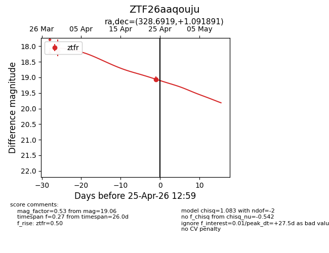
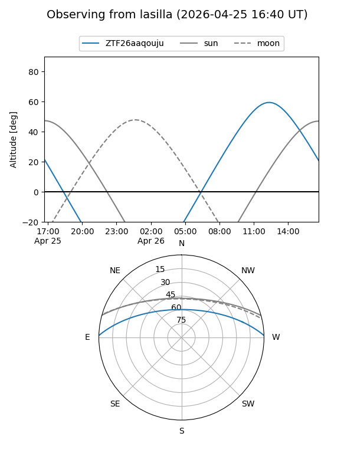
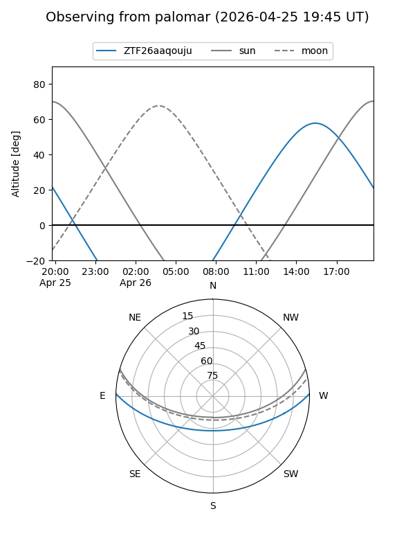
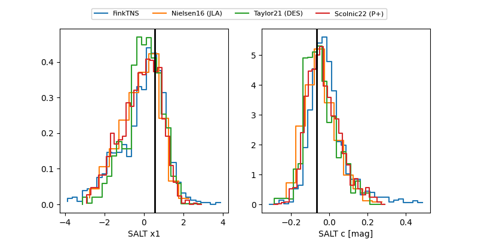

ZTF26aaqouju
Target ZTF26aaqouju at 2026-04-25 13:00
Aliases and brokers:
FINK: link
Lasair: link
ALeRCE: link
alt names
ZTF26aaqouju (ztf,fink_ztf)
Coordinates:
equatorial (ra, dec) = 328.6919,+1.09189
equatorial (HMS+DMS) = 21:54:46.06,+01:05:30.81
galactic (l, b) = (59.2109,-39.01974)
Flags:
Photometry:
last ztfr=19.06
3 ztfr detections
Lightcurve

Visibility


Additional plots
